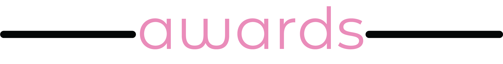

My name is Olivia Knestaut and I am a digital communication arts major at Cab Calloway School of the Arts. I am in the class of 2022 and have a current weighted GPA of 4.94. I am intrested in writing, photography, film, and graphic design. In my freetime, I enjoy travelling the world, reading, and crocheting. I am a member of numerous extracurricular clubs and sports such as Communcation Arts Honor Society, Technology Student Association, Girl Scouts, and the Charter School of Wilmington Crew Team.
- Girl Scouts of the United States of America
- Girl Scout Silver Award 2017
- Technology Student Association
- Challenging Technology Issues (7th Nationally) 2018
- Children’s Story (5th Nationally) 2018
- Fashion Design and Technology (2nd in State) 2019
- Pin Design (2nd in State) 2019
- Scholastics Art and Writing Awards
- Digital Art Silver Key 2019
- Digital Art Honorable Mention 2019
- Short Story Silver Key 2019
- Personal Essay & Memoir Silver Key 2020
- Poetry Honorable Mention 2020
- Adobe
- Illustrator
- Photoshop
- InDesign
- Web
- HTML 5
- CSS 3
- JavaScript
- Languages
- English
- French


The Lighthouse Ghost
Epic Poem
Won Silver Key in poetry collection
in 2020
"There is a lighthouse on the coast,
Watched over by a horrible host.
Rocks jut out from the lighthouse’s base,
Encasing a crashed boat held firmly in place.
Vines inch up its fading striped walls
And mice scurry down its crumbling halls.
But alas, the thing that matters most,
A working light shining over the coast.
This lighthouse has long been in disrepair,
But its structure is not what you need to beware.
Passing the coast is safe in the day,
For you have the sun and it will show you the way
But even with the houses’ blinding light,
No ship has ever made it at night..."
Memories
Poem
Won Silver Key in poetry collection
in 2020
"Bad memories are so hard to forget,
the more you think the worse they get.
Why is it so hard to remember the good,
all the stories forgotten from your childhood.
why don't I remember going to disney when I was three,
but I can't seem to forget falling when I learned to ski.
I wish and hope that these thoughts leave me be,
but the more I wish the more they come back to me..."
The Insignifigant Signifigance of a Roller Coaster
Personal Essay/Memoir
Won Silver Key 2020
"We were standing before it, a terrifying skeleton reaching up towards the sky. Wildwood’s “The Great Nor’Easter” Roller Coaster. At 13, I had never been on a roller coaster. From the time I was very young, my family thought negatively of them, they did not enjoy roller coasters. We never went to amusement parks and I had probably only seen three or four coasters in my life. Because these negative thoughts surrounded me from such a young age, I grew up with a hatred for them, with no reason of my own. I turned down field trips, I turned down friends, all because of a decision that was made for me. Then came the summer of 2017..."
Full readingRubik's Cube
Slam Poem
Won Silver Key in poetry collection
in 2020
"The world’s not round. I’ll tell you why.
Now, I have a truth you cannot deny.
It’s not flat either, which many others believe,
This new information is hard to conceive.
Let me introduce you to the Cube Earth Theory.
Now, of my discoveries you may be weary.
But, this Earth, it is more than just a prism,
It’s an incredibly complex mechanism...."
Full reading

Class of 2022 sophomore class shirt (2019)
For class theme "It"
Brooklyn Nine-Nine poster design
school project 2019
Stigmatized, Stereotyped, and Sensationalized
Girls Who Code SIP Activist Project
Visit Website Here